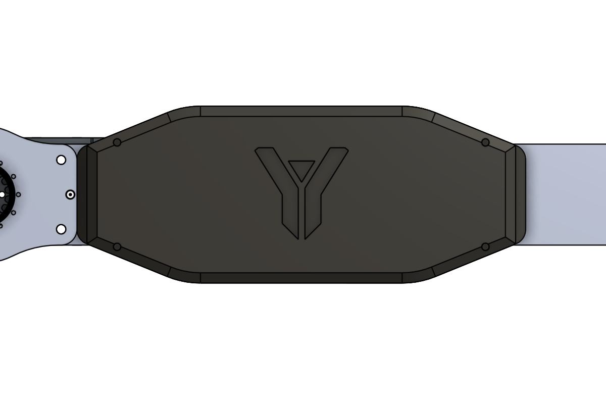

1 · Science claw: designed, built, used at URC 2026
Problem
The old end effector was hard to swap and was mounted inefficiently on the rover's hand. The science tasks at URC need a claw that grips irregular rock and soil samples.
Constraints
- Bolt directly onto the existing hand's bolt pattern.
- Jaw geometry that holds irregular samples.
- Light enough for the arm's torque limits; quick to assemble and repair.
Design
A four-bar linkage driven by two servos, with replaceable fingers so damaged or task-specific fingers can be swapped in the field without removing the claw.


Result
The claw was built and mounted on the forearm, and the team used it to collect geological samples at the University Rover Challenge 2026.
2 · Forearm electronics enclosure: redesign
Problem
The arm moved to a new ODrive motor controller and fuse board, and the old enclosure was too small. Cramped wiring caused mechanical interference, pressed on the fuse board until it shifted, and made servicing hard.
What I changed
| Length | 178 mm → 216 mm (+21%) |
| Wall thickness | 3 mm, thinned where possible to recover internal volume |
| Cable exit | Enlarged to respect cable bend radius and cut strain |
| Cap | Taller, for stacked wiring |


Status
3 · Elbow joint FEA: analysis support
A teammate designed a new elbow joint, and I ran the static FEA (von Mises stress) to check it under arm-manipulation loads. The results showed stress concentrations at the mounting interfaces.

What I'd change
- Log the claw's grip force and the masses of the samples it picked up, so its performance is measured rather than described.
- Run the enclosure through a quick fit check with the real wiring harness before the final print.
- Report the FEA with its full setup (material, load case, constraints) and a safety factor.